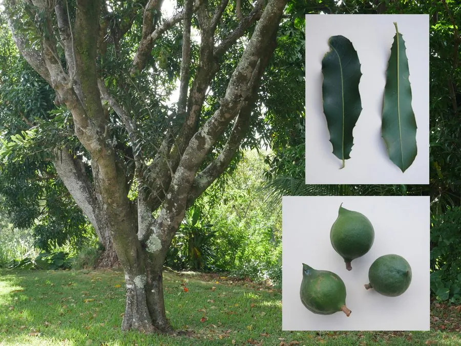

农作物与经济植物 · 植物界
澳洲坚果 Macadamia integrifolia

澳洲坚果是山龙眼科常绿乔木，果仁圆润香脆、富含油脂，可炒食或制巧克力，是原产澳大利亚的著名坚果。
- 分类
- 门被子植物门纲双子叶植物纲目山龙眼目科山龙眼科属澳洲坚果属
- 栖息环境
- 亚热带雨林与湿润山地，喜温暖、怕霜冻
- 地理分布
- 原产澳大利亚昆士兰，现栽培于夏威夷、南非与中国云南、广西
- 保护级别
- 暂无评估（栽培作物）
物种志
澳洲坚果是山龙眼科常绿乔木，株高 10–15 m，树冠浓密，叶色深绿，叶片披针形，革质，边缘有锯齿。花为总状花序，淡粉或白色，下垂。果实为蓇葖果，外有绿色或褐色果皮，内含一枚球形硬壳种子，壳极硬，种仁乳白，富含油脂。
澳洲坚果原产澳大利亚昆士兰东南部雨林，19 世纪末开始人工栽培，如今夏威夷、南非、澳大利亚和中国云南、广西等地均有种植。它喜温暖湿润、光照充足，不耐霜冻，适宜在排水良好的酸性土壤生长。果实秋季成熟，采收后去壳、烘干。果仁可炒食、盐焗、制巧克力与糕点，也可榨坚果油，是高端坚果。澳洲坚果生长缓慢，定植后数年才进入丰产期。
形态与习性
- 株高10–15 m，常绿乔木
- 叶披针形，革质
- 果实蓇葖果，内含硬壳种子
- 果壳极硬，需机械破壳
- 种仁乳白，富含油脂
- 用途炒食、巧克力与糕点
趣味知识
- 澳洲坚果的壳非常硬，破壳需要专用机械。
- 它原产澳大利亚雨林，夏威夷曾长期是最大产区。
- 澳洲坚果果仁含油量高，口感酥脆。